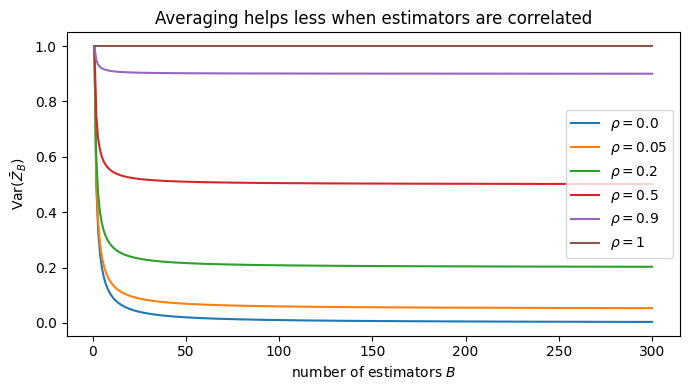
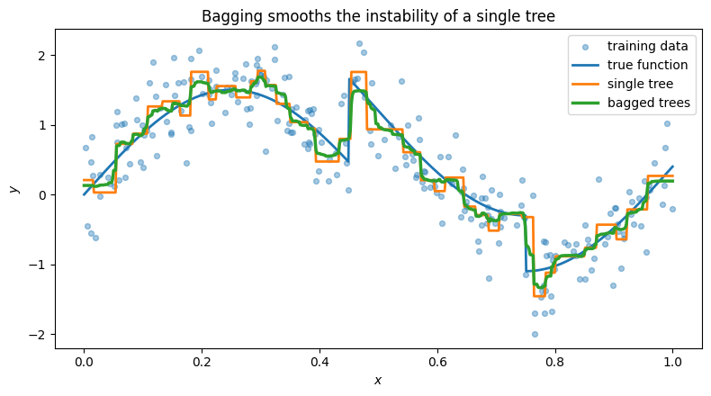
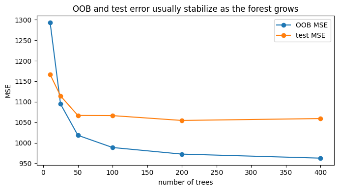
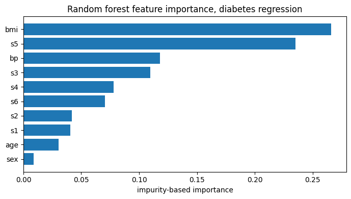
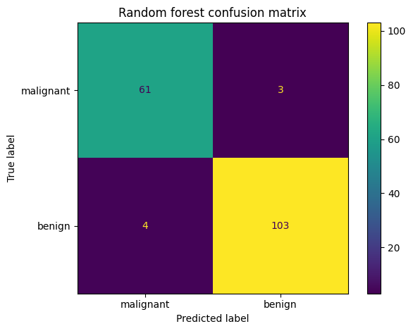
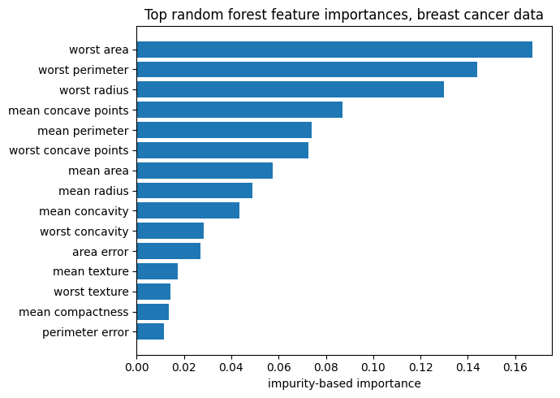

These materials were developed with assistance from AI tools. All content has been reviewed and edited by the instructor, who takes final responsibility for its accuracy, clarity, and appropriateness for the course. Students should treat these materials as instructor-reviewed course content while applying the same critical judgment they would use with any technical material. Please report any suspected errors or unclear explanations to ghunt@wm.edu.
In the previous lecture, we studied trees: classification and regression trees. A single tree is easy to interpret and can capture nonlinear structure, but it is often unstable. A small change in the training data can produce a noticeably different tree.
Random forests are built around one main idea: average many randomized trees. We’ll see that this allows the variance to go down while the bias stays relatively low.
If \(\rho=0\), then \(\operatorname{Var}(\bar Z_B)=\sigma^2/B\).
If \(\rho=1\), then \(\operatorname{Var}(\bar Z_B)=\sigma^2\).
If \(0<\rho<1\), averaging helps, but the variance cannot go below \(\rho\sigma^2\).
So averaging reduces variance most when the observations not too correlated.
Show code
# Variance of an average as a function of B for several correlations.B_values = np.arange(1, 301)rho_values = [0.0, 0.05, 0.2, 0.5, 0.9, 1]sigma2 =1.0plt.figure(figsize=(7, 4))for rho in rho_values: var_avg = rho * sigma2 + (1- rho) * sigma2 / B_values plt.plot(B_values, var_avg, label=fr"$\rho={rho}$")plt.xlabel("number of estimators $B$")plt.ylabel(r"$\operatorname{Var}(\bar Z_B)$")plt.title("Averaging helps less when estimators are correlated")plt.legend()plt.tight_layout()plt.show()

21.3 Bagging: bootstrap aggregation
Using these properties of averaging we can make regression and classifiers better by combining, in what’s called an ensemble, many individual regression methods or classifiers. This is called bagging. Bagging (stands for bootstrap aggregation) whereby we:
draw many (bootstrap) sub-samples from the training data;
fit one tree to each bootstrap sample;
combine the resulting predictions.
A bootstrap sample from data of size \(N\), is a sample of size \(N\) that is drawn with replacement from the original training data. So each bootstrap sample contains some training observations multiple times and leaves some observations out. The main idea is that a boostrap sample mimics the sampling process:
real sample: population \(\to\) sample
boostrap sample: sample \(\to\) subsample
21.3.1 Step 1
Let the original training data be
\[
\mathcal{D}_N = \{(x_n,y_n)\}_{n=1}^N.
\]
For \(b=1,\dots,B\), draw a bootstrap sample
\[
\mathcal{D}_N^{(b)}
\]
by sampling \(N\) training pairs from \(\mathcal{D}_N\) with replacement.
21.3.2 Step 2
Then fit a base method to each bootstrap sample:
\[
\hat s_b.
\]
21.3.3 Step 3
Then we’ll combine the various \(\hat s_b\).
21.3.3.1 Regression
For regression, each \(\hat s\) gives a scalar score
For bagged classification, there are two closely related ways to combine the base methods: hard voting and soft voting.
In both cases, each base method \(\hat s_b\) produces a “soft” score vector
\[
\hat s_b^\text{soft}(x) \in \mathbb{R}^K
\] which is our traditional score from a classification tree such that the elements are positive and sum to one. There is the associated \(\hat f_b(x) = a(\hat s_b^\text{soft}(x)) \in \{1,\ldots,K\}\).
In the hard-vote version, we can encode this prediction as a one-hot score vector
Classical random forests are often described in the first way: hard-voting. Some software implementations, including sklearn, use the soft-voting version (see: link “In contrast to the original publication, the scikit-learn implementation combines classifiers by averaging their probabilistic prediction, instead of letting each classifier vote for a single class.”)
Tradeoff. Hard voting is simple and robust. Each tree only contributes its predicted class, so the forest does not rely on the tree’s estimated probabilities being very accurate. The cost is that hard voting throws away information. A tree that is barely confident and a tree that is very confident count the same.
Soft voting averages class-probability vectors instead of hard class labels. This uses more information from each tree, since a prediction like
\[
(0.51, 0.49)
\]
is treated differently from
\[
(0.99, 0.01).
\]
The cost is that soft voting depends more on the quality of the probability estimates produced by the individual trees.
When we say probabilities are calibrated, we mean that predicted probabilities match empirical frequencies. For example, among observations where a model predicts class 1 with probability about \(0.8\), roughly 80% of those observations should actually belong to class 1.
So the tradeoff is:
hard voting is less sensitive to bad probability estimates, but loses confidence information;
soft voting uses confidence information, but can be misleading if the probabilities are poorly calibrated.
21.3.4 Out-of-bag samples
The probability that a fixed training observation is not selected in one draw is
\[
1-\frac{1}{N}.
\]
The probability that it is not selected in any of the \(N\) bootstrap draws is
So each bootstrap sample leaves out about \(36.8\%\) of the training observations. These left-out observations are called out-of-bag observations for that base method. We’ll revisit these later.
Show code
# How much of the original data appears in a bootstrap sample?N =1000n_reps =5000unique_fracs = []oob_fracs = []for _ inrange(n_reps): sample = rng.integers(0, N, size=N) unique = np.unique(sample) unique_fracs.append(len(unique) / N) oob_fracs.append(1-len(unique) / N)print("Average fraction appearing at least once:", np.mean(unique_fracs).round(4))print("Average out-of-bag fraction:", np.mean(oob_fracs).round(4))print("Theoretical in-bag fraction:", (1- np.exp(-1)).round(4))print("Theoretical out-of-bag fraction:", np.exp(-1).round(4))
Average fraction appearing at least once: 0.6324
Average out-of-bag fraction: 0.3676
Theoretical in-bag fraction: 0.6321
Theoretical out-of-bag fraction: 0.3679
21.4 Bagged regression trees
The advantage of bagging is just like the advantage of averaging individual samples in the case of normal random variables. We can reduce variance while leaving the expected value, i.e. bias, unchanged.
Bagging is especially useful for trees because deep trees are unstable. The individual trees have high variance (but low bias), and averaging can reduce that variance.
# Compare a single deep tree to a bagged collection of deep trees.single_tree = DecisionTreeRegressor( max_depth=None, min_samples_leaf=5, random_state=657677)bagged_trees = RandomForestRegressor( n_estimators=3000, # how many trees to bag: B max_features=1.0, # to discuss later bootstrap=True, min_samples_leaf=5, random_state=654654)
plt.figure(figsize=(8, 4.5))plt.scatter(x, y, s=18, alpha=0.4, label="training data")plt.plot(x_grid, f_grid, linewidth=2, label="true function")plt.plot(x_grid, y_single, linewidth=2, label="single tree")plt.plot(x_grid, y_bag, linewidth=2.5, label="bagged trees")plt.xlabel("$x$")plt.ylabel("$y$")plt.title("Bagging smooths the instability of a single tree")plt.legend()plt.tight_layout()plt.show()

A single tree can jump sharply because one split changes the prediction for an entire region. A bagged predictor averages many such trees, so the final prediction is more stable.
Bagging reduces variance by averaging many unstable trees, but it is not a complete substitute for regularization. If each tree is extremely deep and leaves contain only a few observations, the averaged model can still track noise. Parameters such as min_samples_leaf, max_depth, and max_samples control how flexible the individual trees are.
Bagging helps by averaging many unstable trees, but it helps most when the trees are not too highly correlated. In a one-dimensional example, all trees split on the same predictor, so the bootstrap trees can still be quite correlated. As a result, bagging may smooth the fitted function somewhat, but it may not eliminate overfitting if the individual trees are very deep. Increasing n_estimators reduces Monte Carlo noise in the average, but it does not regularize the individual trees.
Thus bagging removes the uncorrelated part of the tree variance, but it cannot remove the part shared across trees. If the trees are highly correlated, meaning \(\rho\) is large, then the variance reduction from averaging has a limit. Making the individual trees less regularized usually increases the variance of each tree. It may also reduce the correlation between trees, because each tree becomes more sensitive to its bootstrap sample. Bagging benefits from lower correlation, but the relevant large-\(B\) quantity is approximately
\[
\rho \sigma^2.
\]
So less regularization is not automatically better. It may lower \(\rho\), but it can increase \(\sigma^2\) enough that the averaged predictor still looks noisy.
21.5 Bagged classification trees
Bagging classifiers works well for similar, but less easy to caputure mathematically, reasons.
In a Jupyter environment, please rerun this cell to show the HTML representation or trust the notebook. On GitHub, the HTML representation is unable to render, please try loading this page with nbviewer.org.
This is a prediction for \(x_n\)made only by trees that did not train on \(x_n\). So we can define
\[
\hat{y}_{\text{OOB},n} = a(\hat s_{\text{OOB},n}(x_n))
\] and then use these OOB predictions to calculate error metrics.
OOB error acts like an internal validation error. It is not exactly the same as a separate test set, but it is often a useful estimate of generalization performance since we’re predicting on \(x_n\) using a method that never saw \(x_n\).
Show code
# OOB error for the regression example.bagged_oob = RandomForestRegressor( n_estimators=500, max_features=1.0, bootstrap=True, oob_score=True, # This gives us OOB predictions min_samples_leaf=2, random_state=657677)bagged_oob.fit(X_reg, y)
In a Jupyter environment, please rerun this cell to show the HTML representation or trust the notebook. On GitHub, the HTML representation is unable to render, please try loading this page with nbviewer.org.
Training MSE: 0.072
OOB MSE: 0.1921
OOB R^2: 0.7761
21.7 From bagging to random forests
Bagging uses bootstrap samples to make trees different. But if the same strong variables are always available at every split, many trees may still look similar (high \(\rho\)). Similar trees have highly correlated predictions. To solve this, instead of fitting a normal tree, random forests fit Random Trees.
For a random tree, at each split, we only consider a random subset of the \(D\) features.
Let
\[
M \leq D
\]
be the number of features considered at each split. Instead of searching over all features
# Single deep treesingle_tree = DecisionTreeRegressor( max_depth=None, min_samples_leaf=2, random_state=657677)# bagging# Counter-intuitively: If None or 1.0, then max_features=n_features, since its not int(1) but 100% fracbag_like = RandomForestRegressor( n_estimators=3000, max_features=1.0, bootstrap=True, min_samples_leaf=2, random_state=657677)# RFrf_sqrt = RandomForestRegressor( n_estimators=3000, max_features="sqrt", bootstrap=True, min_samples_leaf=2, random_state=657677)single_tree.fit(X_train, y_train)bag_like.fit(X_train, y_train)rf_sqrt.fit(X_train, y_train)
In a Jupyter environment, please rerun this cell to show the HTML representation or trust the notebook. On GitHub, the HTML representation is unable to render, please try loading this page with nbviewer.org.
def tree_prediction_summary(model, X_eval): preds = np.column_stack([tree.predict(X_eval) for tree in model.estimators_]) corr = np.corrcoef(preds.T) off_diag = corr[np.triu_indices_from(corr, k=1)]return {"avg_pairwise_tree_corr": np.nanmean(off_diag),"avg_tree_pred_sd": preds.std(axis=1).mean(),"ensemble_pred_sd": preds.mean(axis=1).std(), }summary = pd.DataFrame({"bagged trees, all features": tree_prediction_summary(bag_like, X_test),"random forest, sqrt features": tree_prediction_summary(rf_sqrt, X_test),}).Tsummary["test_RMSE"] = [ np.sqrt(mean_squared_error(y_test, bag_like.predict(X_test))), np.sqrt(mean_squared_error(y_test, rf_sqrt.predict(X_test))),]print("Single tree test RMSE:")print(np.sqrt(mean_squared_error(y_test, single_tree.predict(X_test))))display(summary.round(4))
Single tree test RMSE:
44.88972854419329
avg_pairwise_tree_corr
avg_tree_pred_sd
ensemble_pred_sd
test_RMSE
bagged trees, all features
0.0659
29.6456
7.9294
32.5985
random forest, sqrt features
0.0631
28.8104
7.5183
32.4180
The random forest version often has lower pairwise correlation between trees because each split is forced to consider only a subset of features. This does not guarantee lower test error in every dataset, but it targets the variance formula:
Random forests try to make \(\rho\) smaller without making each tree too weak.
Random forests are not guaranteed to improve on bagging. Feature subsampling reduces correlation between trees, but it also makes each tree weaker (higher bias) because each split sees only a subset of the variables. If there are only a few predictors, or if most of the signal is in one predictor, then too low max_features can be too aggressive and can perform worse than bagging.
21.9 How many trees?
The number of trees is controlled by
\[
B.
\]
As \(B\) increases, the random forest prediction stabilizes. More trees do not cause overfitting in the same way deeper individual trees can. Instead, more trees reduce Monte Carlo noise from the randomization.
The tradeoff is computation: more trees take more time and memory.
Show code
# OOB error as a function of the number of trees.n_tree_values = [10, 25, 50, 100, 200, 400]oob_mse_values = []test_mse_values = []for B in n_tree_values: rf = RandomForestRegressor( n_estimators=B, max_features="sqrt", bootstrap=True, oob_score=True, min_samples_leaf=2, random_state=657677 ) rf.fit(X_train, y_train) oob_pred = rf.oob_prediction_ oob_mse_values.append(mean_squared_error(y_train, oob_pred)) test_mse_values.append(mean_squared_error(y_test, rf.predict(X_test)))plt.figure(figsize=(7, 4))plt.plot(n_tree_values, oob_mse_values, marker="o", label="OOB MSE")plt.plot(n_tree_values, test_mse_values, marker="o", label="test MSE")plt.xlabel("number of trees")plt.ylabel("MSE")plt.title("OOB and test error usually stabilize as the forest grows")plt.legend()plt.tight_layout()plt.show()

21.10 Real regression example: diabetes data
We now compare a single tree, bagged trees, and a random forest on a real regression dataset.
The response is a quantitative disease-progression outcome. The predictors are baseline measurements.
# Feature importance for the random forest regression model.rf_reg = models_reg["random forest"]importance_reg = pd.DataFrame({"feature": X_diab.columns,"impurity_importance": rf_reg.feature_importances_,}).sort_values("impurity_importance", ascending=False)display(importance_reg.round(4))plt.figure(figsize=(7, 4))plt.barh(importance_reg["feature"], importance_reg["impurity_importance"])plt.gca().invert_yaxis()plt.xlabel("impurity-based importance")plt.title("Random forest feature importance, diabetes regression")plt.tight_layout()plt.show()
feature
impurity_importance
2
bmi
0.2659
8
s5
0.2353
3
bp
0.1181
6
s3
0.1099
7
s4
0.0781
9
s6
0.0707
5
s2
0.0418
4
s1
0.0407
0
age
0.0305
1
sex
0.0090

21.11 Feature importance
Random forests often report feature importance scores. The usual impurity-based score works like this:
every time a feature is used in a split, measure how much the split reduces RSS or impurity;
add those reductions across all splits in all trees;
normalize so that the scores sum to one.
These scores are useful, but they should be interpreted cautiously. They can be biased toward variables with many possible split points, and correlated features can split importance between each other.
A more model-agnostic alternative is permutation importance: randomly permute one feature in the test set and measure how much performance gets worse.
Show code
# Permutation importance on the test set.perm_reg = permutation_importance( rf_reg, X_test, y_test, scoring="neg_root_mean_squared_error", n_repeats=15, random_state=657677)perm_importance_reg = pd.DataFrame({"feature": X_diab.columns,"permutation_importance": perm_reg.importances_mean,"sd": perm_reg.importances_std,}).sort_values("permutation_importance", ascending=False)display(perm_importance_reg.round(4))
feature
permutation_importance
sd
2
bmi
6.4514
1.1939
8
s5
6.2596
1.4523
3
bp
1.8328
0.9754
9
s6
0.6705
0.4067
1
sex
0.4197
0.1607
7
s4
0.3803
0.6189
5
s2
-0.0025
0.3154
0
age
-0.0965
0.1701
4
s1
-0.2951
0.2876
6
s3
-0.6699
0.9314
21.12 Real classification example: breast cancer data
Now we use a binary classification dataset. We compare a single classification tree, bagged trees, and a random forest.
# Confusion matrix for the random forest classifier.rf_clf = models_clf["random forest"]y_pred = rf_clf.predict(X_test)ConfusionMatrixDisplay.from_predictions( y_test, y_pred, display_labels=class_names)plt.title("Random forest confusion matrix")plt.tight_layout()plt.show()

Show code
# Feature importance for the classification forest.importance_clf = pd.DataFrame({"feature": X_cancer.columns,"impurity_importance": rf_clf.feature_importances_,}).sort_values("impurity_importance", ascending=False)display(importance_clf.head(15).round(4))plt.figure(figsize=(7, 5))plt.barh(importance_clf.head(15)["feature"], importance_clf.head(15)["impurity_importance"])plt.gca().invert_yaxis()plt.xlabel("impurity-based importance")plt.title("Top random forest feature importances, breast cancer data")plt.tight_layout()plt.show()
feature
impurity_importance
23
worst area
0.1672
22
worst perimeter
0.1440
20
worst radius
0.1300
7
mean concave points
0.0869
2
mean perimeter
0.0741
27
worst concave points
0.0726
3
mean area
0.0574
0
mean radius
0.0491
6
mean concavity
0.0433
26
worst concavity
0.0283
13
area error
0.0270
1
mean texture
0.0174
21
worst texture
0.0143
5
mean compactness
0.0137
12
perimeter error
0.0116

21.13 Main tuning parameters
Important random forest tuning parameters include:
Number of trees
\[
B.
\]
More trees reduce Monte Carlo noise, but increase computation.
Number of features considered at each split
\[
M.
\]
Smaller \(M\) makes trees less correlated, but each individual split may be weaker.
Tree size
Controlled through parameters such as maximum depth, minimum samples per leaf, or minimum samples needed to split. Deeper trees have lower bias but higher variance before averaging.
21.14 Practical notes
21.14.1 Scaling
Random forests are usually not sensitive to monotone rescaling of individual features. A split like
\[
x_j \leq t
\]
has an equivalent split after changing units. Standardization is therefore not usually required.
21.14.2 Categorical variables
Conceptually, trees can split categorical variables by grouping categories. Implementation details vary. In many Python workflows, categorical variables are one-hot encoded before using sklearn random forests.
21.14.3 Missing values
Some modern tree implementations handle missing values internally. Depending on the software and version, sklearn support varies by tree estimator and criterion. A safe general workflow is to use an imputer inside a pipeline when missing values are present.
21.14.4 Interpretation
A single tree can be drawn and inspected. A random forest is harder to interpret because it averages many trees. Feature importance and partial dependence plots can help summarize the fitted forest, but they are not the same as reading off a simple set of rules.
21.14.5 Extrapolation
Trees and random forests are piecewise constant or averages of piecewise constant functions. They are usually poor at extrapolating outside the range of the training data.